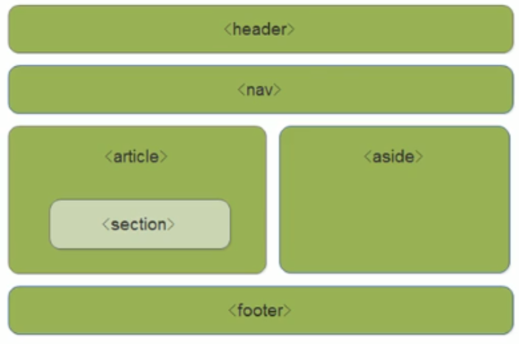
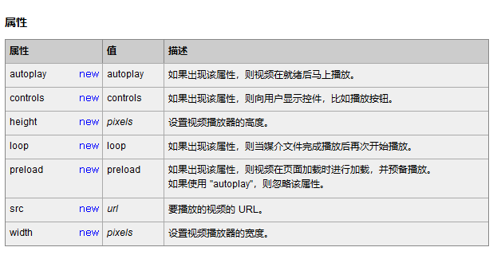
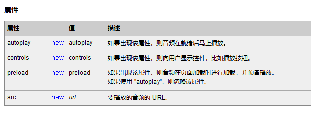
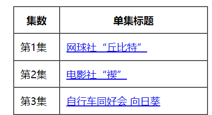

HTML基础
一、基本标签
分类：
- 单标签：仅由一个标签组成的标签（如：
<br/>或<br>） - 双标签：由两个标签组成的标签（如：
<html>HTML文档</html>）
- 单标签：仅由一个标签组成的标签（如：
HTML基本结构标签
| 标签名 | 定义 | 说明 | | :---------------: | :--------: | :------------------------------------------------------: | |
<html></html>| HTML标签 | 页面中最大的标签，我们称为根标签 | |<head></head>| 文档的头部 | 注意在head标签中我们必须要设置的标签是title | |<title></title>| 文档的标题 | 让页面拥有一个自己的网页标题 | |<body></body>| 文档的主体 | 元素包含文档的所有内容，页面内容基本上都是放到body里面的 |HTML分段标签
| 标签名 | 语义 | | :-----------------------: | :----------------------------------------------------------: | |
<h1></h1>~<h6></h6>| 标题标签。一共有六级，并且重要性依次递减。 加了标题标签的文字，会单独作为一行并加粗 | |<p></p>| 段落标签。把html文档分成若干的段落，段落后会添加一个空行 | |<br/>或<br>| 换行标签。会将html文档强制换行 |HTML文本格式化标签
| 语义 | 标签 | 说明 | | :----: | :----------------------------: | :---------------------------------------: | | 加粗 |
<strong></strong>或<b></b>| 更推荐使用标签加粗，语义更强烈 | | 倾斜 |<em></em>或<i></i>| 更推荐使用标签添加倾斜，语义更强烈 | | 删除线 |<del></del>或<s></s>| 更推荐使用标签添加删除线，语义更强烈 | | 下划线 |<ins></ins>或<u></u>| 更推荐使用标签添加下划线，语义更强烈 |HTML布局标签
| 语义 | 标签 | 说明 | | :--: | :-------------: | :----------------------------------------------------------: | | 无 |
<div></div>| div标签没有语义，是用来布局的，一行只能放一个div标签，可以理解为一个大盒子 | | 无 |<span></span>| span标签没有语义，是用来布局的，一行可以放多个span标签，可以理解为一个小盒子 |HTML图像标签：
<img/>属性：
| 属性 | 属性值 | 说明 | | :----: | :------: | :------------------------------------: | | src | 图片路径 | 必须属性 | | alt | 文本 | 替换文本，图片不能显示时的提示文字 | | title | 文本 | 提示文本，鼠标停留在图像上时的提示文字 | | width | 像素 | 设置图像宽度 | | height | 像素 | 设置图像高度 | | border | 像素 | 设置图像边框的粗细 |
Note：
- 属性添加到img之后
- 属性之间没有先后顺序
- 属性采取键值对的格式，即key = "value"，属性 = “属性值”
- 修改宽度和高度时，只需修改其中一个即可，剩下一个会等比例修改
HTML超链接标签：
<a></a>属性：
| 属性 | 属性值 | 说明 | | :----: | :----------------------------------------------------------: | :---------------------------------------------------------: | | href | 指定链接目标的url地址
外部链接的语法要求：必须以http://开头
内部链接：文件夹中的html文件名
空链接：#
下载链接：待下载的文件名
锚点链接：点击链接快速定位到页面的某个位置
阻止链接跳转：javascript:; | 用于创建超链接 | | target | _self：在当前页面打开链接
_blank：创建一个新页面打开链接 | 用于指定链接页面的打开方式，
若不指定则以_self作为默认值 |格式：
<a href = "待链接的url地址"> 网页元素 </a>锚点链接的使用
- 给待链接的网页元素添加一个链接：
<a href="#标记"> 网页元素 </a> - 给待跳转至的网页元素的标签中添加一个属性：
id=“标记”
- 给待链接的网页元素添加一个链接：
HTML5的语义化标签 —— 代替原有滥用的div标签
| 标签 | 语义 | | :---------: | :-----------------------------------------------: | |
<header>| 头部标签 | |<nav>| 导航标签 | |<article>| 内容标签 | |<section>| 定义文档的某个区域（相当于以前div装内容的小盒子） | |<aside>| 侧边栏标签 | |<footer>| 尾部标签 |
HTML5新增多媒体标签
视频标签：
<video src="文件地址" controls="controls"></video>
音频标签：
<audio src="文件地址" controls="controls"></audio>
二、特殊字符
| 特殊字符 | 描述 | 字符的代码 |
|---|---|---|
| 空格符 | |
|
| < | 小于号 | ⁢ |
| > | 大于号 | $gt; |
| & | 和号 | & |
| ￥ | 人民币 | ¥ |
| © | 版权 | © |
| ® | 注册商标 | ® |
| °C | 摄氏度 | ° |
| ± | 正负号 | ± |
| × | 乘号 | × |
| ÷ | 除号 | &divede; |
| ² | 平方 | ² |
| ³ | 立方 | ³ |
三、表格
表格使用到的标签
| 语义 | 标签 | 说明 | | :------------: | :---------------: | :---------------------------------: | | 定义表格 |
<table></table>| 最外层嵌套的标签 | | 定义表格头部 |<thead></thead>| 表格结构标签，必须嵌套在table标签中 | | 定义表格主体 |<tbody></tbody>| 表格结构标签，必须嵌套在table标签中 | | 定义行 |<tr></tr>| 必须嵌套在table标签中 | | 定义单元格 |<td></td>| 必须嵌套在tr标签中 | | 定义表头单元格 |<th></th>| 会让填入的数据居中加粗显示 |表格的属性：在table标签中使用（一般不会使用HTML来定义表格的格式，而是使用CSS来设定）
| 属性名 | 属性值 | 描述 | | :---------: | :-----------------------: | :-----------------------------------------: | | align | left、center、right | 规定表格相对周围元素的对齐方式 | | border | 1（有边框）或""（无边框） | 规定表格单元是否拥有边框，默认为“” | | cellpadding | 像素值 | 规定单元边沿与其内容之间的空白，默认为1像素 | | cellspacing | 像素值 | 规定单元格之间的空白，默认为2像素 | | width | 像素值或百分比 | 规定表格的宽度 | | height | 像素值 | 规定表格的高度 |
示例：
<table align="center" border="1" cellspacing="0" cellpadding = "10"> <thead> <tr> <th>集数</th> <th>单集标题</th> </tr> </thead> <tbody> <tr> <td>第1集</td> <td><a href="#Episode_01"> 网球社“丘比特”</a></td> </tr> <tr> <td>第2集</td> <td><a href="#Episode_02"> 电影社“禊”</a></td> </tr> <tr> <td>第3集</td> <td><a href="#Episode_03"> 自行车同好会 向日葵</a></td> </tr> </tbody> </table>
合并单元格
合并单元格的方式（属性）—— 作用与td标签上：
跨行合并：rowspan = “合并单元格的个数” 跨列合并：colspan = “合并单元格的个数”
目标单元格：
跨行合并：则目标单元格为待合并单元格中最上侧的单元格
跨列合并：则目标单元格为待合并单元格中最左侧的单元格
合并的步骤：
- 确定是跨行还是跨列
- 找到目标单元格，将合并单元格的属性添加到目标单元格的属性中
- 删除多余的单元格
四、列表
作用：用来布局
无序列表标签：
| 语义 | 标签 | 说明 | | :----------: | :---------: | :--------------------------------------------------: | | 定义无序列表 |
<ul></ul>| ur标签中只能嵌套li标签，其它所有的数据元素都不能使用 | | 定义列表项 |<li></li>| 相当于一个容器，里面可以嵌套任何内容 |去掉li前面的小圆点：给li添加属性—— list-style: none
有序列表标签：
| 语义 | 标签 | 说明 | | :----------: | :---------: | :--------------------------------------------------: | | 定义有序列表 |
<ol></ol>| or标签中只能嵌套li标签，其它所有的数据元素都不能使用 | | 定义列表项 |<li></li>| 相当于一个容器，里面可以嵌套任何内容 |自定义列表标签：应用于一个大哥带着一群小弟的场景（dt和dd是兄弟关系）
| 语义 | 标签 | 说明 | | :--------------: | :---------: | :------------------------------------------------------: | | 定义自定义列表 |
<dl></dl>| dl标签中只能嵌套dt和dd标签，其它所有的数据元素都不能使用 | | 定义“大哥”列表项 |<dt></dt>| 每个自定义列表可以含有多个dt标签 | | 定义“小弟”列表项 |<dd></dd>| 每个自定义列表可以含有多个dd标签 |
五、表单
作用：收集用户信息
组成：
表单域：包含表单元素的区域
表单控件（也称表单元素）：按钮、方框等让用户填入信息的“道具”
提示信息：文字提示
表单域：实现用户信息的收集和传递，即将用户输入提交给后台
标签：
<form></form>属性：
| 属性 | 属性值 | 作用 | | :----: | :------: | :----------------------------------------------: | | action | url地址 | 用于指定接受并处理表单数据的服务器程序的url地址 | | method | get/post | 用于设置表单数据的提交方式，其取值为get或post | | name | 名称 | 用于指定表单的名称，以区分同一页面中的多个表单域 |
表单元素
| 语义 | 标签 | 说明 | | :----------: | :----------------------------------------------------------: | :----------------------------------------------------------: | | 输入表单元素 |
<input type = "属性值"/>| 通过设置不同的属性值设置不同的表单控键 | | 下拉表单元素 | |
| <select>中至少包含一个<option>
在<option>中添加属性select = "selected"，
可设置当前项为默认选项 | | 文本域元素 |<textarea></textarea>| 可以读入很多内容的文本框
属性：
cols = “每行显示字符数”
rows = “显示的行数”
注： 一般使用CSS来改变文本域大小 |==input表单==
type属性的属性值
| 属性值 | 描述 | | :------: | :----------------------------------------------------------: | | button | 定义可点击按钮（多数情况下，用于通过JS启动脚本） | | checkbox | 定义复选框（所有选项必须要有相同的name属性） | | file | 定义输入字段和“浏览”按钮，供文件上传 | | hidden | 定义隐藏的输入字段 | | image | 定义图像形式的提示按钮 | | password | 定义密码字段。该字段中的字符被掩码。 | | radio | 定义单选按钮（所有选项必须要有相同的name属性） | | reset | 定义重置按钮。重置按钮会清除表单中的所有数据 | | submit | 定义提交按钮。提交按钮会把表单数据发送到服务器 | | text | 定义单行的输入字段，用户可在其中输入文本。默认宽度为20个字符 |
HTML5新增type属性值：
| 属性值 | 描述 | | :----: | :-------------------------: | | email | 限制用户输入必须为Email类型 | | url | 限制用户输入必须为URL类型 | | date | 限制用户输入必须为日期类型 | | time | 限制用户输入必须为时间类型 | | month | 限制用户输入必须为月类型 | | week | 限制用户输入必须为周类型 | | number | 限制用户输入必须为数字类型 | | tel | 手机号码 | | search | 搜索框 | | color | 生成一个颜色选择表单 |
其它属性：
| 属性 | 属性值 | 描述 | | :-------: | :----------: | :----------------------------------------------------------: | | name | 由用户自定义 | 定义input元素的名称 | | value | 由用户自定义 | 规定input元素的值 | | checked | checked | 规定此input元素首次加载时应当被选中（主要使用在单选按钮和复选框） | | maxlength | 正整数 | 规定输入字段中的字符的最大长度 |
name和value是每个表单元素都有的属性值，主要给后台人员使用
HTML5新增的表单属性：
| 属性 | 值 | 说明 | | :-------------: | :-------: | :----------------------------------------------------------: | | required | required | 表单拥有该属性说明其内容不能为空 | | placeholder | 提示文本 | 表单的提示信息，存在默认值将不显示 | | autofocus | autofocus | 自动聚焦属性，页面加载完成将自动聚焦到此表单 | | autocomplete | off/on | 键入时i，浏览器会给予之前键入过的值，显示出应该在字段中填写的选项
默认为打开状态
需要放在表单内，同时加上name属性，同时成功提交 | | multiple | multiple | 可以多选文件提交 |
<label>标签：通常在表单中使用作用：
<label>标签用于绑定一个表单元素，当点击语法：
<!-- 在label标签中使用for属性设置一个标记值，再在对应的表单元素添加一个id属性，其值为for中设计的标记值 --> <label for="sex">男</label> <input type = "radio" name = "SEX" id = "sex"/>关键：lable标签的for属性与相关元素的id属性相同
六、Emment语法
快速生成HTML结构的Emment语法
| HTML结构 | Emment语法 | 示例 | 生成内容 | | :-------------------------: | :-------------------------------------------------------: | :-------: | :----------------------------------------------------------: | | 生成标签 | 直接输入标签名，在按下tab键 | div |
<div></div>| | 生成多个相同标签 | 在标签名后面加上和待生成数目 | div3 |<div></div><div></div><div></div>| | 生成带有父子级的标签 | 父标签>子标签 | ul>li |<ul>
<li></li>
</ul>| | 生成带有兄弟级的标签 | 标签+兄弟标签 | div+p |<div></div><p></p>| | 生成带有类名的标签 | 在标签名后加上.类名
（若不写标签名则默认生成div标签） | p.demo |<p class="demo"></p>| | 生成带有id名字的标签 | 在标签名后加上#id名
（若不写标签名则默认生成div标签） | #two |<div id="two"></div>| | 如果生成的div类名是有顺序的 | 可以使用自增符号$
作用为使带有$的为止从1开始自增 | .demo$*3 |<div class="demo1"></div><div class="demo2"></div><div class="demo3"></div>| | 在标签内部书写内容 | 可以在标签名后面用{}将书写内容包含 | h1{title} |<h1>title</h1>|快速生成CSS样式的Emment语法
用Emment生成CSS样式基本采取简写形式（一般取首字母）即可
示例：
- 比如w200，再按下tab，可以生成
width: 200px - 比如lh26，再按下tab，可以生成
line-height: 26px - 比如tac，再按下tab，可以生成
text-align: center
- 比如w200，再按下tab，可以生成